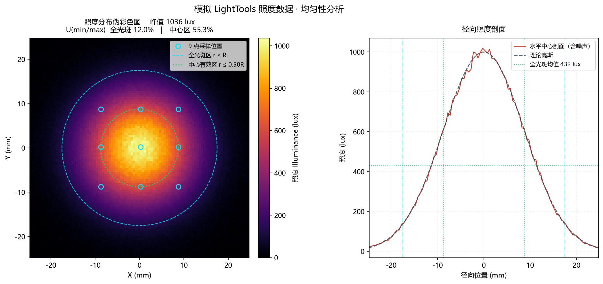
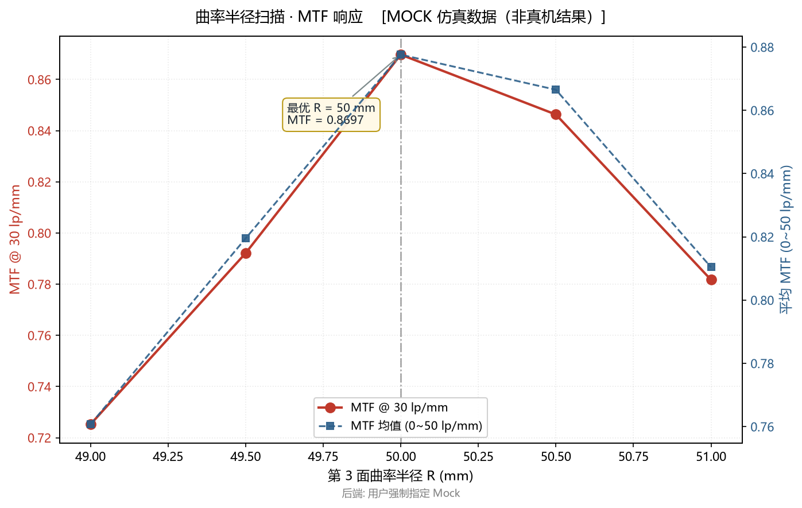
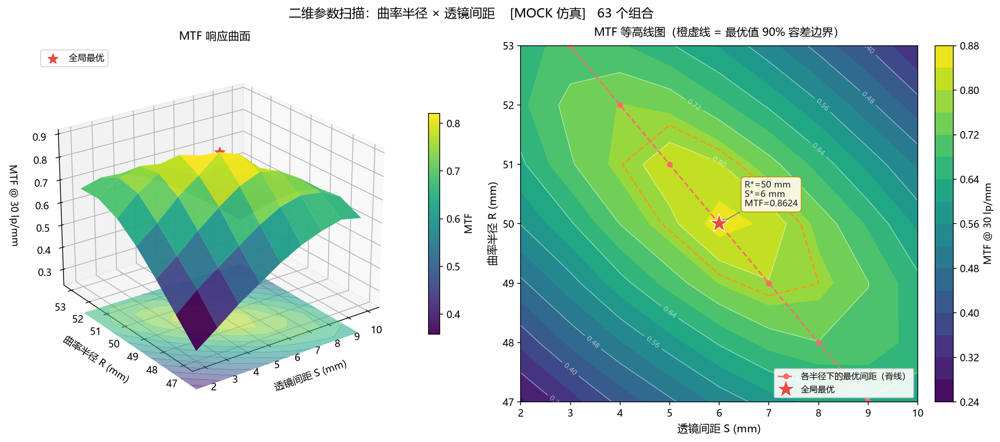
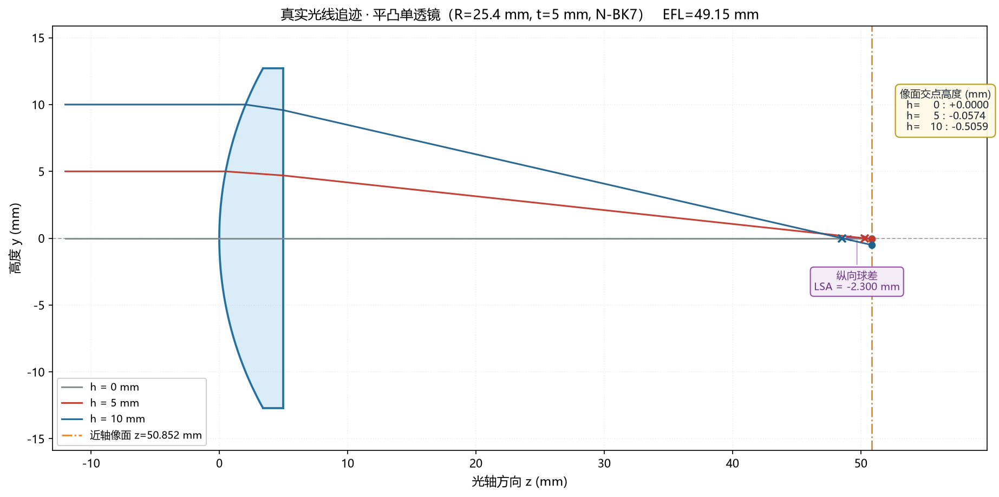
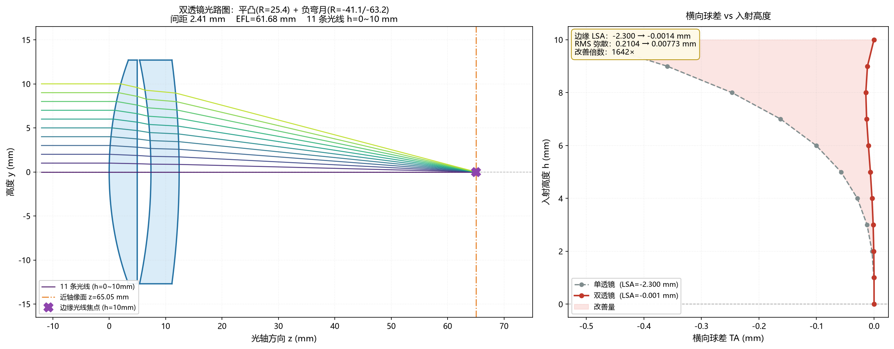
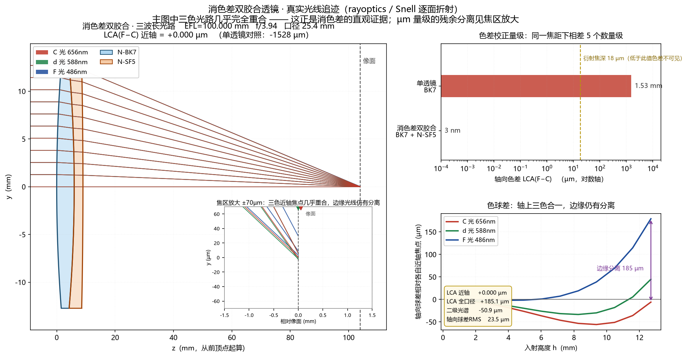
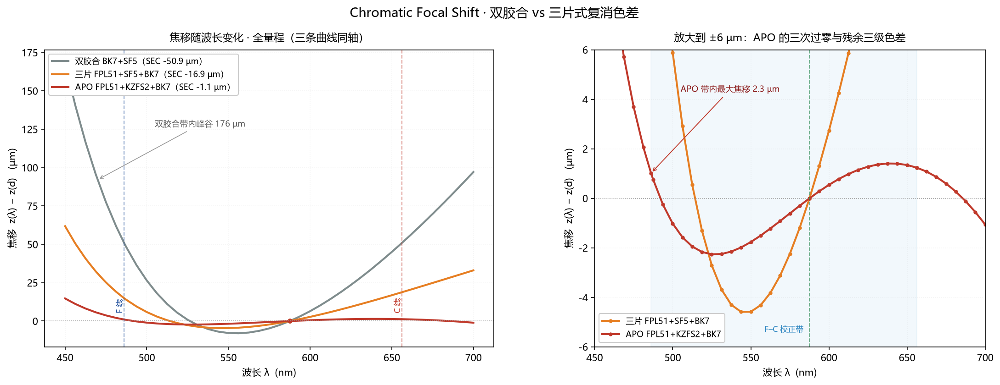
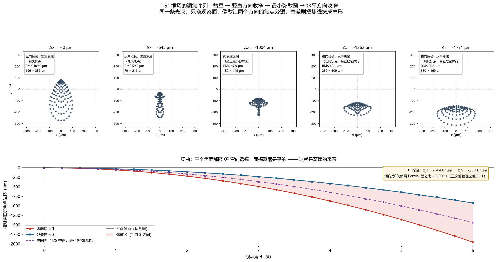
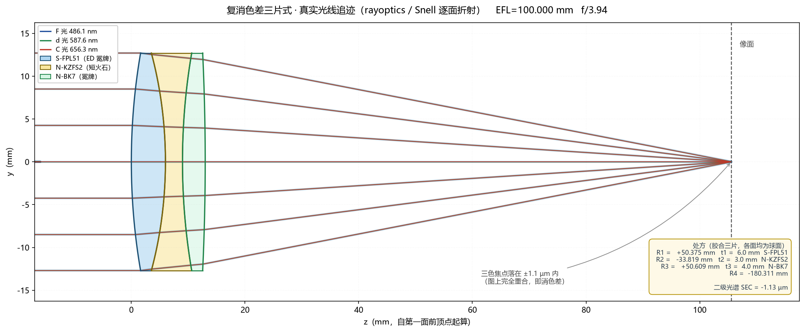
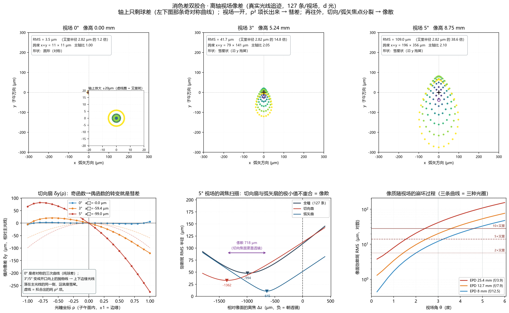

Abstract
这套框架要解决的不是「算一个透镜」，而是把「改参数 → 追迹 → 提指标 → 判据校验」这条闭环 做成可复现、可降级、可交接的脚本。业务层只声明扫什么、取什么，求解后端藏在抽象接口之后， 因此同一份代码既能在没有光学软件的机器上跑通全流程，也能在装有 Zemax 的工作站上直接对接真机。
方法论上坚持三重独立校核：一阶量对近轴解析解（EFL = R/(n−1)、BFL = f − d/n、 φ₁/V₁ + φ₂/V₂ = 0）；三阶量对幂律（TA ∝ h³、LSA ∝ h²、彗差 ∝ θ¹、像散 ∝ θ²）； 场曲对 Petzval 求和（1/R_p = Σφᵢ/nᵢ）。任何一条对不上，先怀疑代码而不是先解释物理。
数据诚实性上，Mock 后端的结果一律显式标注 backend=mock，不与真机数据混用；
降级链每一级的失败原因都落盘可查。作品集里的每个数字都能由归档脚本重新跑出来。
【免责与开源声明】
本项目为个人技术验证项目。Zemax 自动化寻优部分因无商业授权，采用 Mock（模拟接口）验证算法； 所有光线追迹、球差/色差/APO 及离轴像差分析，均基于 Python 开源库 rayoptics 进行真实物理计算。 代码框架由本人设计，AI 辅助编写，所有结果已通过理论公式交叉验证。
| 章 | 主题 | 核心结果 | 验证方式 |
|---|---|---|---|
| 01 | 照明数据管线 | U(min/max) 12.0%（全光斑）/ 55.3%（中心区） | 1/e² 分窗 + 9 点法 |
| 02 | 参数空间寻优 | MTF@30lp 峰值 0.8697（R=50, S=6） | 63 点矩阵 + 脊线斜率 |
| 03 | 单透镜追迹 | EFL 49.1488 mm，LSA −2.301 mm | TA ∝ h³ 实测 8.81 / 理论 8.00 |
| 04 | 球差校正 | LSA 2.3005 → 0.0014 mm（−99.94%） | Nelder-Mead + 回弯判据 |
| 05 | 消色差双胶合 | 近轴 LCA −1528 → −0.003 µm | φ/V 解析分配 + 三波长 |
| 06 | APO 三片式 | 二级光谱 −50.94 → −1.13 µm | 全库 ΔP 选型 + 带内扫描 |
| 07 | 轴外像差 | RMS 3.5 / 41.7 / 109 µm（0/3/5°） | θ¹·θ² 幂律 + Petzval 3:1 |
Illuminance Data Pipeline
照明系统数据自动化处理

任务是把一张「看起来还算均匀」的照度分布，变成可以判定的数字。用 numpy 生成 100 × 100 采样、间距 0.5 mm 的高斯光斑（1/e² 半径 17.5 mm），叠加随机噪声模拟探测器采集；pandas 落盘为宽表，matplotlib 做伪彩色渲染并叠加等照度线——把二维场压成一张可判读的图。
真正需要工程判断的是统计窗口。若直接在整张 35 × 35 mm 网格上取 min/max，高斯尾部会把最小值拉到接近零，均匀性结论立刻失去意义。因此按 1/e² 孔径（3852 个有效采样点）与 0.5R 中心区（952 点）分窗统计，并同时给出 U(min/max)、U(min/mean)、U(mean/max) 三种定义——严格程度依次递减，只报其中一种很容易产生歧义。
结果：全光斑 U(min/max) = 12.0%，中心区 55.3%，变异系数由 56.0% 降至 14.4%，9 点法 U(min/max) = 34.7%。这个「低」不是程序缺陷：按 1/e² 的定义，高斯分布在口径边缘的强度必然衰减到峰值的 13.5%，任何高斯配光都不可能通过 50% 的全光斑判据。要提升只能改配光本身——平顶、超高斯或复眼匀光。
Parameter Space Sweep
一维与二维参数空间全局寻优


这一章搭的是所有扫描的地基：业务层只描述「扫哪些参数、取什么指标」，求解后端藏在抽象接口之后，按 zospy → 原生 ZOS-API → Mock 三级降级。任一后端不可用时不抛异常，而是记录失败原因、退到下一级，输出 CSV 里带 backend 字段。同一份脚本因此在没有装光学软件的机器上能跑通，在装有 Zemax 的工作站上取消一段注释即可对接真机。
一维扫描把曲率半径从 49 mm 到 51 mm 走 5 点，MTF@30 lp/mm 在 R = 50.0 处取到峰值 0.8697，曲线单峰、两侧对称下降。二维扫描进一步引入空气间隔（2–10 mm），构成 7 × 9 = 63 点矩阵，全局最优落在 R = 50 / S = 6，MTF = 0.8624。
比最优点更有价值的是等高线的形状：最优脊线斜率为 −1.0，即曲率每增大 1 mm，最优间距就要减小约 1 mm。曲率与间距在焦度上强耦合，这意味着公差分配不能单独放宽某一项——两者必须联合管控，否则单看各自公差都会误判。
backend=mock），用于验证框架的吞吐能力与降级逻辑，不代表 Zemax 实测 MTF。真机接入后同一脚本可原样复跑，字段与图表结构保持不变。注：本章节数据为 ZOS-API 的 Mock 框架测试结果，用于展示自动寻优逻辑，非真实 Zemax 导出数据。
Real Ray Tracing, Singlet
单透镜真实光线追迹

从这一章起脱离 Mock，改用 rayoptics 做真实斯涅尔折射追迹。模型是 EPD 25.4 mm 的平凸单透镜，物在无穷远（首面间隔置 1e10 模拟平行光），曲率半径 25.4 mm、中心厚 5 mm。
先做近轴校核：EFL = R/(n−1) = 25.4/0.5168 ≈ 49.15 mm，实测 49.1488 mm；BFL = f − d/n，实测 45.8523 mm，与解析值吻合到小数点后两位。这一步不通过就说明面型或材料填错了，后面的像差数字都不必再看——先算对一阶量，再谈三阶量。
然后追三条高度 5 / 10 mm 的平行光。h = 10 mm 处横向球差 TA = −0.5059 mm、纵向球差 LSA = −2.301 mm。把 h = 5 mm 与 10 mm 的结果相除：TA 比 8.81、LSA 比 4.15，对应理论 h³ = 8.00 与 h² = 4.00。偏差来自五级像差与有限物距的贡献，但量级与走势确认了这就是三阶球差本身，而不是别的误差在冒充。
Spherical Correction
球差校正实战：正负透镜组合

单透镜的球差无法自愈——球面在边缘的折光能力天然强于近轴。经典解法是给正透镜配一片负透镜：负透镜产生符号相反、随口径增长更快的球差，把正透镜的欠校正抵消掉。模型为平凸 + 负弯月，11 条光线覆盖 0–10 mm 半口径。
三个自由量（弯月前后表面曲率 R3、R4 与空气间隔）交给 scipy 的 Nelder-Mead 无导数优化，目标函数取 h = 10 mm 处的 LSA，并约束焦距不变。这里用无导数算法比梯度法稳：目标函数接近零时会被追迹误差弄出细小锯齿，差分梯度会直接失效。
结果：LSA 从 −2.3005 mm 收敛到 −0.0014 mm，降幅 99.94%（改善 1642 倍）；像面弥散 RMS 从 0.2104 mm 降到 0.0077 mm。特别要注意 h = 8 mm 附近曲线出现回弯——这是五级球差残余，说明「三阶球差归零」并不等于「全口径完美成像」，边缘光线依旧欠校正。这条回弯就是两片式的物理极限，再往前必须加片。
Achromatic Doublet
色差校正与双胶合设计

色差来自材料色散：同一片玻璃对 F 光与 C 光的折射率不同，焦点于是沿轴分开。消色差的薄透镜条件很干脆——φ1/V1 + φ2/V2 = 0，同时 φ1 + φ2 = 1/100。解出冕牌 +49.74 mm、火石 −98.96 mm，两者光焦度反号，阿贝数比与焦距比互为倒数。
材料取 N-BK7（nd 1.5168 / Vd 64.17）与 N-SF5（nd 1.6727 / Vd 32.25），三面胶合、中间面曲率共用，得 R = +52.962 / −47.495 / −187.989 mm，EFL 精确到 100.0000 mm。胶合面的边缘厚度同时做了几何校验（冕牌 2.73 mm / 火石 4.30 mm），避免解出来的设计在实物上崩边。
近轴 LCA 从单透镜的 −1528 µm 压到 −0.003 µm（3 nm），四个数量级。但这不是免费的：二级光谱仍有 −50.9 µm，全口径色球差 +185 µm，像面弥散 5.78 µm。近轴 LCA 归零只保证「三条近轴光线交于一点」，边缘光线的球差随波长漂移（色球差）并不受这条方程约束——这正是下一章要处理的残留。
Apochromatic Triplet
APO 复消色差设计：ED 玻璃选型

复消色差要同时满足三个方程：总光焦度、F = C、以及 d 光落在 F 与 C 的中点。三个方程要求三块玻璃的「相对部分色散偏离」ΔP 彼此拉开。把材料库全部 1087 种玻璃的 P 对 V 做线性拟合，得到正常线 P = 0.000438·V − 0.222442；普通玻璃的 ΔP 都落在 ±0.002 内，三方程因此病态，解出的光焦度无法加工。
真正的解在反常色散材料：S-FPL51（氟磷酸盐 ED）ΔP = −0.0076、N-KZFS2（短火石）ΔP = +0.0049、N-BK7 ΔP = +0.0020，符号与量级都够用。最终处方 R = +50.375 / −33.819 / +50.609 / −180.311 mm，厚度 6 / 3 / 4 mm，EFL = 100.0001 mm。
二级光谱从双胶合的 −50.94 µm 压到 −1.13 µm，改善 45 倍；近轴 LCA −0.22 µm，450–700 nm 带内峰谷 17.0 µm，带内最大焦移 2.3 µm，横向弥散 4.76 µm。过程中还留了一个反面样本：FPL51 + SF5 + BK7 只放了一片 ED、却没配反常火石，二级光谱只做到 −16.9 µm——这说明「加一片 ED」并不自动等于 APO，ΔP 必须成对拉开。
Off-Axis Aberrations
离轴视场与像质评估

轴上做到极致之后，视场一斜就是另一场战争。斜入射时孔径上下两侧的等效焦距不再相等：彗差按 θ¹ 增长，像散与场曲按 θ² 增长。复用第 5 章的消色差双胶合（f/3.94），每个视场用六角极坐标铺 127 条光线做真实追迹。
三条幂律全部实测复现。彗差系数 a₂ 在 3° 与 5° 的比值为 1.665（理论 5/3 = 1.667）；像散（切向与弧矢焦面间距）比值 2.76（理论 (5/3)² = 2.78）；Petzval 面上切向与弧矢的相对偏离为 3.00 : 1，与薄透镜理论一致，实测 R_p = 133.7 mm 对理论 137.4 mm（差 3%，源于忽略厚度）。还有一个容易漏掉的细节：离焦只产生奇次项、不污染切向扇的二次项，所以拟合出的 a₂ 是干净的纯彗差。
量化结论：0° / 3° / 5° 的弥散斑 RMS 为 3.5 / 41.7 / 109 µm，相当于艾里半径的1.2 / 14.8 / 38.6 倍。以 10 倍艾里为崩溃判据，这个系统在 ±2.4° 彻底失效；按 2 倍艾里算，可用视场只有 ±0.7°。即使允许每个视场单独重调焦，也只撑到 ±3.45°——说明瓶颈不是调焦，而是波前畸变本身。缩光圈同样救不了：像差按 D² 缩、艾里斑按 D⁻¹ 涨，f/3.9 缩到 f/12.5 只把相对像质改善约 3 倍，场曲一点没动。
改进方向明确：加平场（field flattener）镜压 Petzval 场曲；把光阑从透镜表面移开、用非对称结构平衡彗差；或者直接换 Cooke 三片式——正-负-正、光阑居中，靠结构对称性同时压彗差与畸变。这也是下一阶段最值得做的一步。
Appendix
补充视图与归档清单


code_and_data · 21 个文件